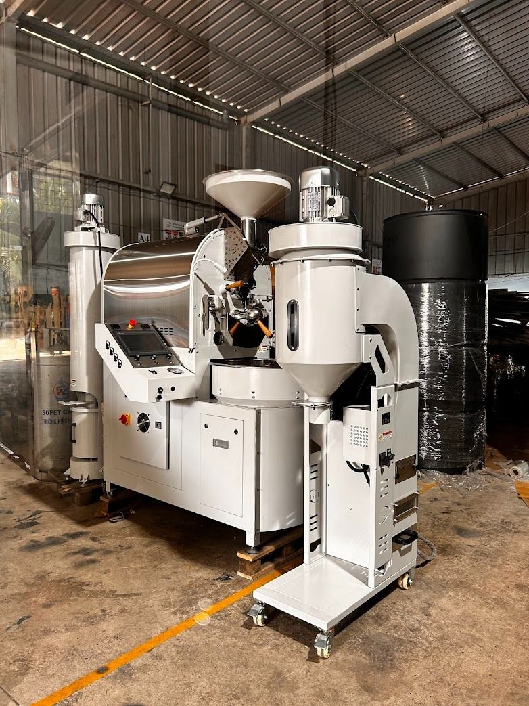

AB-15 · AB-30 · AB-60 · AB-120
AB Afterburner
Clean air, by design.
The OD destoner removes stones and other heavy foreign materials from roasted beans, with precise engineering and an adjustable air suction system. Shown below: the OD-15.
01
Air suction removes stones and heavy impurities precisely.
02
Tune the airflow for beans of different density.
03
Intuitive controls for easy operation.
04
Durable and easy to clean, in a compact footprint.

Clean air, by design.

Storage that grows with you.
Tell us which roaster it will work with and we will size it for you.